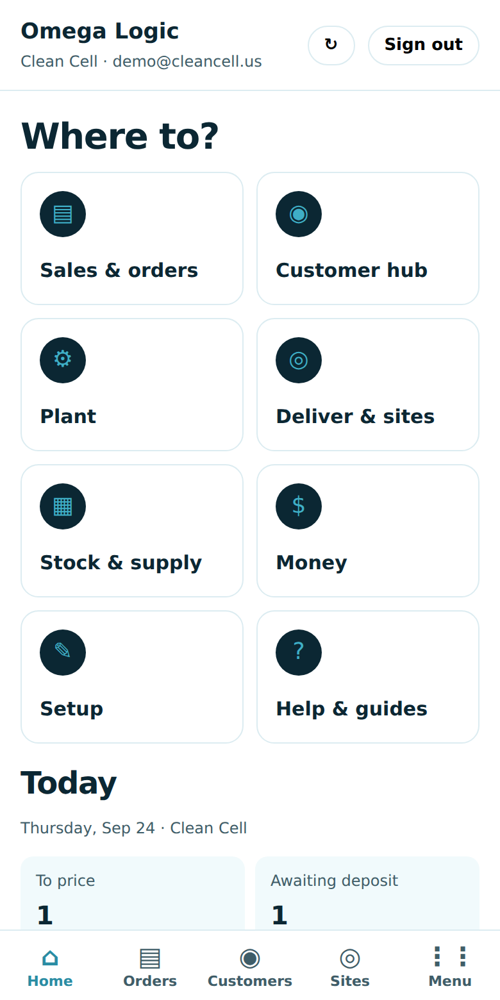
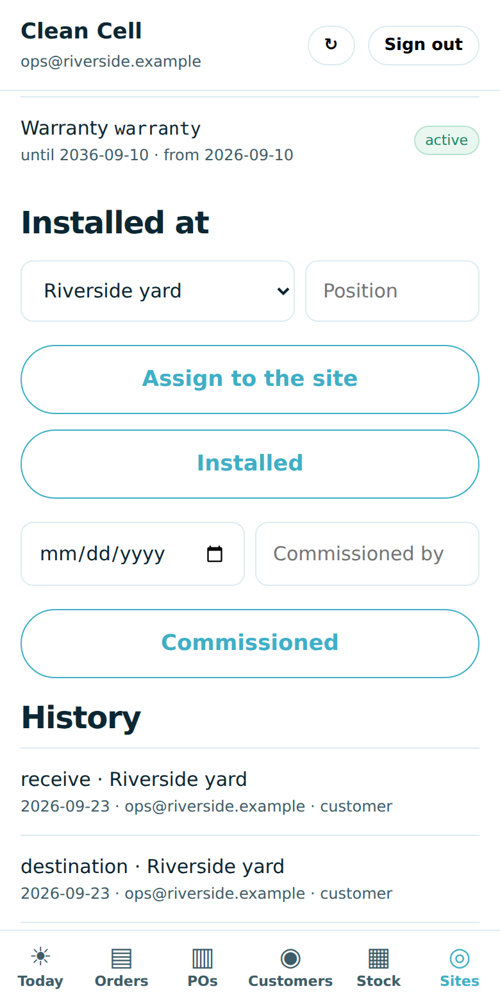

The Omega Logic app
ClearSky's operations app, with your company as the workspace inside it: what needs a person today, orders and customer requests, PO loads, customers, stock, and Sites — what the customer says, receive a load by scan, the unit passport. Clean Cell USA.
1. What it is and where it lives
| What | Address | Sign in |
|---|
| Omega Logic app | silmarillion.clearskyomega.com/office/app?org=cleancell.us | work Google account of the workspace |
| Office (desktop) | silmarillion.clearskyomega.com/omega-logic?org=cleancell.us | same account |
| Fleet register (the spreadsheet) | silmarillion.clearskyomega.com/logic-register?org=cleancell.us | same account |
| Try it first (sample data) | silmarillion.clearskyomega.com/app-sandbox/office | any email |
The desktop office is the full system. The app puts the daily decisions where the person is, and it reads and writes the same orders, customers and units through the same signed-in endpoints, so an answer given on the phone is on the customer's screen the moment it is saved.
2. Put it on your phone
It is a web app: nothing to download from a store, and every update reaches the phone the next time it is opened. Open the address once from the link the office sends; the app remembers the workspace after that. Sign in with the work Google account that is a member of the workspace.
iPhone or iPad (Safari)
- Open Safari and go to the address above.
- Sign in.
- Tap the Share button (the square with the arrow, at the bottom of the screen).
- Scroll the sheet and tap Add to Home Screen, then Add.
- Open it from the home screen from now on. It opens full screen as Omega Logic, ClearSky's app, with your company's workspace shown inside once you sign in.
Android (Chrome)
- Open Chrome and go to the address above.
- Sign in.
- Tap the Chrome menu (three dots) and choose Install app or Add to Home screen.
- Confirm. The app appears with your other apps, with its own icon.
3. Pick a hub, or use the five tabs
After you sign in, Home asks Where to? and shows the hubs, the way QuickBooks lays out its app: Sales & orders, Customer hub, Plant, Deliver & sites, Stock & supply, Money, Setup, Help & guides. Tap one and its list opens. Under the hubs, Home shows what needs a person today.
- Home: the hubs; orders to price, awaiting deposit, in build, ready and shipped; needs a person: company POs to review, open customer requests, orders that need attention; money; the plant.
- Orders: every order with its customer, lines, total and balance, and the work order's built % once it is on the floor. Open one for lines, invoices, build, shipment and the customer's requests. Answer & close a request here. When your company bills its own customers, record invoice issued and payment received on the order.
- Customers: the Customer hub. Each customer is a company account with its people on it. Open one for its balance and open requests, People (approve someone who asked to join, turn off someone who left, invite, add a person), the customer app link to send, the terms for the whole account, every order on it, and its sites and shipped units.
- Sites: mirrors Deliver → Sites & custody on the desktop. The customer says: each unit the customer placed at a site, with Confirm. Going to: destinations named before arrival. Receive a load: choose the load, scan or type each serial. Unit passport: custody, who confirmed, warranty and SLA, history, and only the moves that apply.
- Menu: every function in one place, with a search box and the ones you use most as circles along the top. PO loads (paste a stack of customer POs:
PO number, SKU, qty, ship-to name, address, city, state, ZIP, requested date, notes), Stock, the Fleet register, the plant app and every desktop page are here, never more than two taps away.

Home: pick a hub, then what needs a person Menu: search, frequently used, every hub
Menu: search, frequently used, every hubWhat stays on the desktop, on purpose. Approving a customer price, accepting an order, recording a shipment and settling wires happen on the desktop office pages, next to the QuickBooks evidence. So do the spreadsheet import of site assignments and the coverage templates. The app shows every one of those results and never invents a number.
4. How it links to the main system
- A customer sends a stack of POs from their app, or the office keys them in under Menu → PO loads. Each is an order awaiting pricing, on Home and on the desktop Company POs page.
- The office prices and accepts on the desktop; the deposit is invoiced through QuickBooks; when it is paid the order is released to the plant.
- The builders build it bench by bench. The Stock tab shows finished units and what is short; a finished unit built for stock is assigned to the order here.
- The office records the shipment on the desktop (Shipping & receiving). Every serial on the load starts its custody chain: in transit.
- The customer says on their phone where each unit is going and when it arrived; they assign it to the site it is interconnected at. The Sites tab shows what they said, and the office confirms it. The warranty runs from the ship date and is tied to that site.
- The Fleet register on the desktop is the whole thing as one spreadsheet: seller, buyer, reseller, end customer, site, load, carrier, BOL, every date, warranty and SLA — edited in place, exported to CSV.
 Sites: what the customer says, with Confirm; receive a load by scan
Sites: what the customer says, with Confirm; receive a load by scan
Unit passport on the phone: custody, coverage, the moves that apply5. If something looks wrong
- "Open the app once from your office link so it knows your workspace": open the address with
?org=cleancell.us once; the app remembers it.
- The app looks stale: close it fully and open it again. Updates arrive on the next open; data is never shown from a cache.
- Offline: the app says so and shows nothing rather than yesterday's list.
- Questions: ClearSky Energy Solutions. The full manual is in the workspace documentation.
- Nothing loads after sign-in: your email is not a member of the workspace yet. Contact ClearSky or your administrator.
- A move is refused (for example commissioning a unit that has not been received): the message says why. The rules are the same on every screen; record the earlier step first.